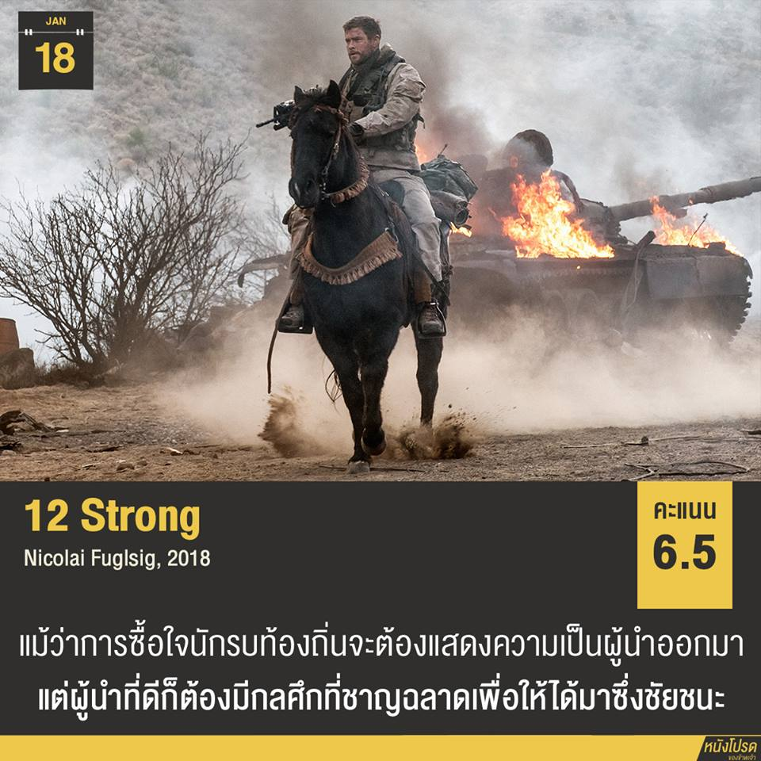

สมรภูมิแห่งนี้ไม่มีทหาร ที่ทำสงครามกันอยู่นี้คือเหล่านักรบ การตายคือหนทางไปสู่ดินแดนที่สวยงามกว่าบนพื้นดิน คำสั่งและแผนการแบบทหารไม่เวิร์คกับคนท้องถิ่นที่นี่หรอก ถ้าอยากซื้อใจพวกเขาก็ต้องแสดงความเป็นผู้นำที่กล้าหาญให้ได้ ถึงแม้หน้าหนัง 12 Strong จะดูขายความเป็นแอ็คชั่นมาก ๆ แต่ตัวเนื้อเรื่องยังคงอ้างอิงจากในหนังสือ Horse Soldiers ได้ครบถ้วนในทุกรายละเอียดสำคัญ หนังเล่าถึงทหารจำนวน 12 นายที่ได้รับภารกิจให้เข้าร่วมกับกองทัพของ 'โดสทุม' ผู้นำทหารทางตอนเหนือของอัฟกานิสถานเพื่อโจมตีกลุ่มตาลีบัน โดยพวกเขาต้องขี่ม้าเข้าพื้นที่อันตรายเพื่อชี้เป้าให้การสนับสนุนทางอากาศปูพรมทิ้งระเบิดใส่ศัตรูให้ราบเป็นหน้ากลอง
ฉากแอ็คชั่นระเบิดระเบ้อเป็นไมเคิล เบย์สไตล์มาก หลัก ๆ แล้วทีมของผู้กองมิตช์จะได้รับการสนับสนุนทางอากาศมาก่อนแล้วทหารราบค่อยเข้าโจมตีภาคพื้นดินซ้ำ แต่บางสนามรบพวกเขาก็ไม่ได้เปรียบอย่างที่คิด เพราะฝ่ายตรงข้ามก็มีการสนับสนุนทั้งรถถังและ BM-21 ที่สามารถกระหน่ำยิงจรวดได้ถึง 40 ลูก